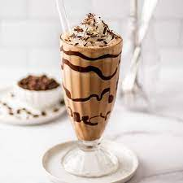

Welcome to Cafe
Coffee Milkshake Recipe

Ingredients:
- 1/4 cup cold Brewed Coffee or 1/2 teaspoon Instant Coffee Powder
- 1/2 cup cold Milk
- 1/2 cup or 3 scoops Vanilla Ice Cream
- 1/2 tablespoon Chocolate Syrup or 1/2 tablespoon Cocoa Powder, optional
- 2 teaspoons Sugar
Directions:
- If brewed coffee is not available, follow this step to make brewed coffee using instant coffee powder. Mix 1/2 teaspoon instant coffee powder with 1/4 cup hot water and stir until the powder dissolves. Cool the mixture before using in next step.
- Pour cold brewed coffee in a blender jar.
- Pour milk over it.
- Add vanilla ice cream.
- Add chocolate syrup (or cocoa powder).
- Blend until frothy and smooth texture. Creamy coffee milkshake is ready. Pour it into a serving glass and garnish with ice cream and chocolate syrup.
For More Details
Visit us :
Food Viva
Email us :
foodviva@gmail.com